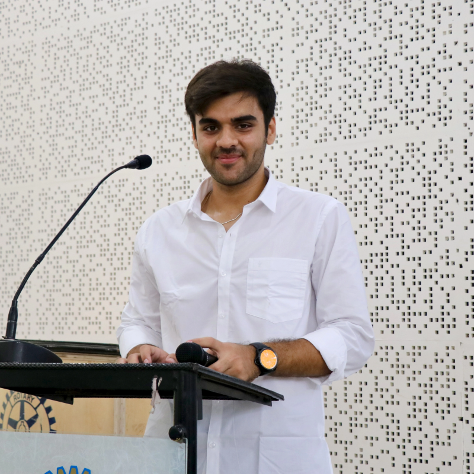

Saumya Kiswani
Entrepreneur | Student-Athlete | Technology & Business Enthusiast
Building at the intersection of commerce, AI systems, and competitive sports. First-year BBA student at IIM Bangalore, founder, and state-level basketball player driven by execution and strategy.

About Me
The journey from bootstrapping at 14 to institutional management studies.
My entrepreneurial journey began early: at age 14, I launched a custom apparel dropshipping business that scaled to over 100 orders and ₹80,000+ in revenue. That foundational hands-on experience in customer acquisition, supply chain coordination, and margin management shaped my perspective on business long before entering formal university classrooms.
Currently pursuing my Bachelor of Business Administration (Digital Business & Entrepreneurship) at IIM Bangalore, I combine rigorous commercial frameworks with technical implementation. Whether building AI-powered financial intelligence terminals at Vihan Capital Partners or orchestrating large-scale youth conclaves, I thrive in fast-paced environments where strategy meets execution.
Outside the boardroom and lecture hall, I am a competitive basketball player and former team captain who brings the discipline, teamwork, and composure of the court into every professional endeavor.
14
Age when first business was launched
300+
Participants led across flagship conclaves
5 Years
Basketball team captaincy record
Education & Academic Background
Foundations in commerce, quantitative reasoning, and digital business.
Indian Institute of Management Bangalore (IIMB)
Bachelor of Business Administration (Digital Business & Entrepreneurship - BBA DBE)
Rigorous management curriculum focusing on digital transformation, data analytics, economics, and entrepreneurial execution.
Jai Hind College, Mumbai
First Year Bachelor of Management Studies (BMS)
Engaged in core business management principles, corporate outreach, and entrepreneurship cell initiatives.
M.J. College, Jalgaon
12th Grade (Commerce Stream) — 93.5%
Completed higher secondary education with distinction; served concurrently as institutional basketball team captain.
St. Joseph's Convent Senior Secondary School, Jalgaon
10th Grade (CBSE) — 90.8% (100 Marks in Sanskrit)
Graduated with honors, demonstrating academic excellence alongside leadership as school sports captain.
Professional Experience
Hands-on internships and entrepreneurial ventures.
AI Product Intern
Vihan Capital Partners (July 2026 — Present)
Developing an end-to-end AI financial intelligence terminal ("Vihan AI") designed to scrape, parse, and summarize NSE/BSE corporate regulatory filings and market news to accelerate investment research workflows.
Founder & Operator
Custom Apparel Dropshipping Business (2022 — Present)
Launched at age 14; managed end-to-end operations including vendor sourcing, digital storefront design, logistics, and customer acquisition, successfully fulfilling ~100 orders with over ₹80,000 in gross revenue.
Co-Founder
Youth Strategy Conclave (March 2025 — Present)
Co-founded and scaled an intellectual leadership platform supported by Rotary, directing a 7-member core team and managing budgets to deliver two editions engaging over 300 delegates across regional workshops.
Leadership & Community Impact
Driving institutional engagement, civic projects, and youth empowerment.
President
Interact Club of Jalgaon Goldcity (July 2024 — August 2025)
Led a premier youth service club of 50+ members; spearheaded major initiatives including a ₹15–20 lakh regional box cricket tournament and a traditional Ganesh idol crafting workshop for 300+ participants. Previously served as Joint Secretary, PR Director, and Social Media Manager.
Corporate Sponsorship Committee Member
Global Entrepreneurship Summit 2026–27
Active member of the Entrepreneurship Cell & Skill Hub steering corporate outreach, pitch deck preparation, and institutional partnership acquisition for flagship summit events.
Technical & Business Projects
Building practical tools combining software engineering and analytical workflows.
Vihan AI Terminal
Python • BeautifulSoup • LLM Integration
An institutional-grade financial intelligence script engineered to automate the ingestion of NSE/BSE corporate filings, extracting financial metrics and generating executive summaries for rapid equity analysis.
JARVIS AI Desktop Assistant
Python • Automation Scripts • OS APIs
A custom-built local desktop assistant script configured for personal workflow automation, system monitoring, quick application launching, and schedule management.
Athletics & Sports Leadership
High-stakes competition, discipline, and team captaincy.
Competitive Basketball & Professional League Player
Mumbai Snipers | ABC Pro Basketball League
Drafted and auctioned into the ABC Pro Basketball League (bidded between ₹50,000 to ₹1,00,000), playing competitive matches for the Mumbai Snipers (owned by the Sule family).
Over 3+ years of state-level basketball competition in Maharashtra, including state championship appearances at Nagpur and Maharashtra National tryouts. Served as school and college basketball team captain for 5 consecutive years across St. Joseph's Convent and M.J. College.
Core philosophy: The resilience, rapid tactical decision-making, and composure under pressure learned on the hardwood directly translate to high-stakes business execution.
Professional Development & Certifications
Continuous learning through global fellowship programmes and technical credentials.
McKinsey Forward Program
McKinsey & Company
Selected for the Core Skills Level program focusing on structured problem solving, adaptive leadership, digital communication, and professional effectiveness.
Harvard Aspire Leaders Program
Aspire Institute
Participating in global leadership development designed by Harvard faculty to cultivate impactful entrepreneurial leadership and cross-cultural collaboration.
CS50: Introduction to Computer Science
Harvard University (EdX)
Completed foundational computer science curriculum covering algorithms, data structures, memory management, and software engineering principles.
Game Theory
Yale University (Coursera)
Studied strategic decision-making, Nash equilibrium, asymmetric information, and competitive market dynamics.
Let's Connect
Open to discussions in venture creation, AI product development, and strategic partnerships.
Get in touch directly via email or professional networking:
saumyakiswani@gmail.com